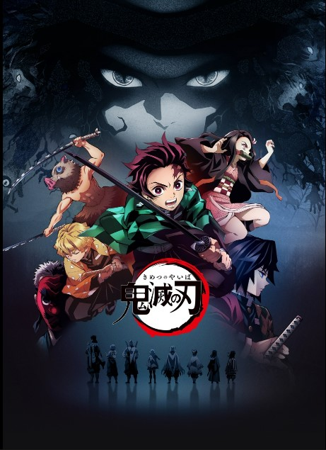
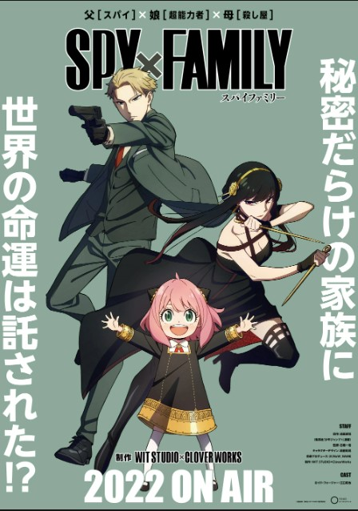
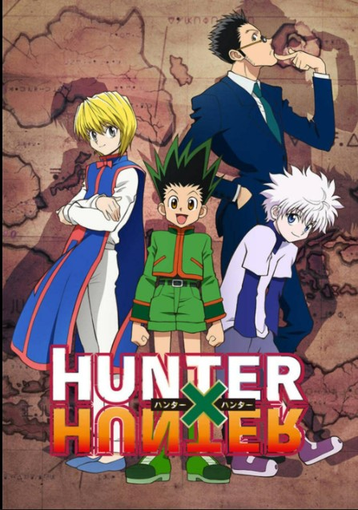
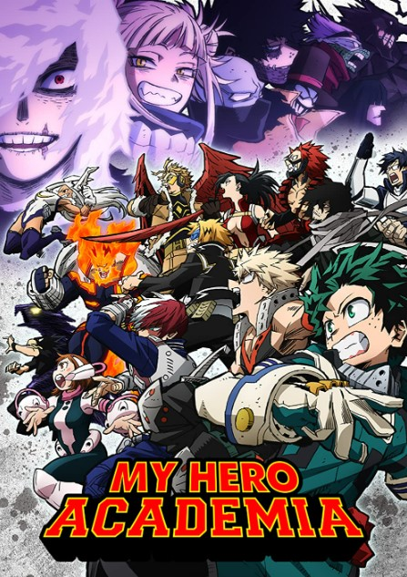
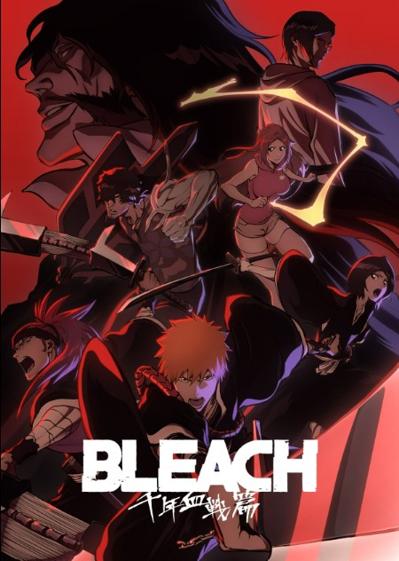
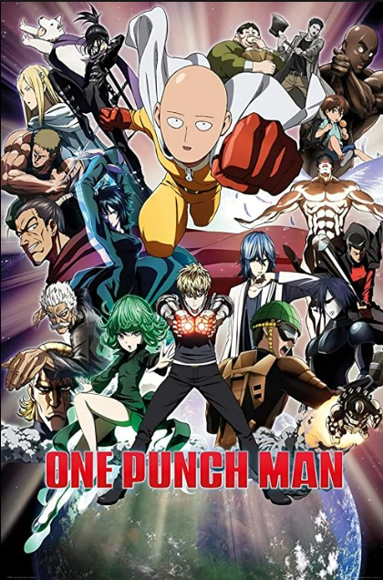
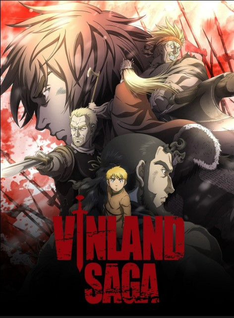

ADVENTURE

NARUTO SHIPPUDEN
Genres: Adventure, Action, Fantasy, Martial Arts, Shounen
Episodes:500
Rating: 8.7/10 · 125,803 votes
Naruto: Shippuden is an anime series mainly adapted from Part II of Masashi Kishimoto's original manga series, with exactly 500 episodes.
It is set two and a half years after the original series in the Naruto universe, following the ninja teenager Naruto Uzumaki and his allies.
The series is directed by Hayato Date, and produced by Pierrot and TV Tokyo. It began broadcasting on February 15, 2007 on TV Tokyo,
and concluded on March 23, 2017.

DEMON SLAYER
Genres: Adventure, Action, Award Winning, Fantasy, Historical, Shounen
Episodes:44
Rating: 8.7/10 · 101,430 votes
Demon Slayer: Kimetsu no Yaiba is a Japanese anime series written and illustrated by Koyoharu Gotouge. It follows teenage Tanjiro Kamado,
who strives to become a demon slayer after his family was slaughtered and his younger sister, Nezuko, turned into a demon. It was serialized
in Shueisha's shōnen manga magazine Weekly Shōnen Jump from February 2016 to May 2020, with its chapters collected in 23 tankōbon volumes.
It has been published in English by Viz Media and simultaneously published by Shueisha on their Manga Plus platform.

SPY X FAMILY
Genres: Adventure, Action, Comedy, Childcare, Shounen
Episodes:12
Rating: 8.7/10 · 662,152 votes
Spy × Family is a Japanese anime series written and illustrated by Tatsuya Endo. The story follows a spy who has to "build a family" to
execute a mission, not realizing that the girl he adopts as his daughter is a telepath, and the woman he agrees to be in a marriage with
is a skilled assassin. The series has been serialized biweekly on Shueisha's Shōnen Jump+ application and website since March 2019, with
the chapters collected in ten tankōbon volumes as of October 2022. It was licensed in North America by Viz Media.

HUNTER X HUNTER
Genres: Adventure, Action, Fantasy, Shounen
Episodes:62
Rating: 9/10 · 99,240 votes
Hunter × Hunter is a Japanese anime series written and illustrated by Yoshihiro Togashi. It has been serialized in Shueisha's shōnen manga
magazine Weekly Shōnen Jump since March 1998, although the manga has frequently gone on extended hiatuses since 2006. Its chapters have been
collected in 37 tankōbon volumes as of November 2022. The story focuses on a young boy named Gon Freecss who discovers that his father, who
left him at a young age, is actually a world-renowned Hunter, a licensed professional who specializes in fantastical pursuits such as locating
rare or unidentified animal species, treasure hunting, surveying unexplored enclaves, or hunting down lawless individuals. Gon departs on a
journey to become a Hunter and eventually find his father. Along the way, Gon meets various other Hunters and encounters the paranormal.

MY HERO ACADEMIA
Genres: Adventure, Action, School, Super Power, Shounen
Episodes:13
Rating: 8.4/10 · 61,983 votes
My Hero Academia is a Japanese superhero anime series written and illustrated by Kōhei Horikoshi. It has been serialized in Shueisha's shōnen
manga magazine Weekly Shōnen Jump since July 2014, with its chapters additionally collected into 36 tankōbon volumes as of October 2022. Set
in a world where superpowers (called "Quirks") have become commonplace, the story follows Izuku Midoriya, a boy who was born without a
Quirk but still dreams of becoming a superhero himself. He is scouted by All Might, Japan's greatest hero, who bestows his Quirk to Midoriya
after recognizing his potential, and helps to enroll him in a prestigious high school for superheroes in training.

BLEACH
Genres: Adventure, Action, Fantasy, Shounen
Episodes:366
Rating: 8.2/10 · 56,010 votes
Bleach (stylized as BLEACH) is a Japanese anime television series based on Tite Kubo's original manga series of the same name. It was
produced by Studio Pierrot and directed by Noriyuki Abe. The series aired on TV Tokyo from October 2004 to March 2012, spanning 366
episodes. The story follows the adventures of Ichigo Kurosaki after he obtains the powers of a Soul Reaper—a death personification similar
to the Grim Reaper—from another Soul Reaper, Rukia Kuchiki. His newfound powers force him to take on the duties of defending humans from
evil spirits and guiding departed souls to the afterlife. In addition to adapting the manga series it is based on, the anime periodically includes
original self-contained storylines and characters not found in the manga.

ONE PUNCH MAN
Genres: Adventure, Action, Comedy, Parody, Super Power, Seinen
Episodes:24
Rating: 8.7/10 · 158,648 votes
One-Punch Man is a Japanese superhero anime series created by One. It tells the story of Saitama, a superhero who, because he can defeat any
opponent with a single punch, grows bored from a lack of challenge. One wrote the original webcomic manga version in early 2009. A digital
manga remake began publication on Shueisha's Tonari no Young Jump website in June 2012. Written by One and illustrated by Yusuke Murata,
its chapters are periodically compiled and published into individual tankōbon volumes. As of November 2022, 27 volumes have been released.
In North America, Viz Media has licensed the remake manga for English language release and has serialized it in its Weekly Shonen Jump
digital magazine.

VINLAND SAGA
Genres: Adventure, Action, Comedy, Drama, Historical, Seinen
Episodes:48
Rating: 8.8/10 · 38,697 votes
Vinland Saga is a Japanese historical anime series written and illustrated by Makoto Yukimura. The series is published by Kodansha, and
was first serialized in the boys youth-targeted manga magazine Weekly Shōnen Magazine before moving to the monthly manga magazine
Monthly Afternoon, aimed at young adult men. As of May 2022, its chapters have been collected in 26 tankōbon volumes. Vinland Saga
has been licensed for English-language publication by Kodansha USA.